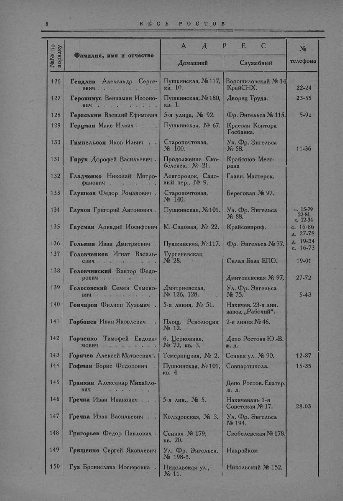

Лист источника 56
Скан

Распознанный текст
8 В Е С Ь Р О С Т О В
№№ по порядку Фамилия, имя и отчество А Д Р Е С № телефона
Домашний Служебный
126 Гендлин Александр Сергеевич . . . . . . . . . Пушкинская, № 117, кв. 10. Ворошиловский № 14 КрайСНХ. 22-24
127 Геронимус Вениамин Исоонович . . . . . . . . . Пушкинская, № 180, кв. 1. Дворец Труда. 23-55
128 Гераськин Василий Ефимович 5-я улица, № 92. Фр. Энгельса № 115. 5-92
129 Герцман Макс Ильич . . . . Пушкинская, № 67. Краевая Контора Госбанка.
130 Гимнельсон Яков Ильич . . Старопочтовая, № 100. Ул. Фр. Энгельса № 58. 11-36
131 Гирук Дорофей Васильевич . Продолжение Скобелевск., № 21. Крайсоюз Местрана
132 Гладченко Николай Митрофанович . . . . . . . . Ленгородок, Садовый пер., № 9. Главн. Мастерск.
133 Глушков Федор Романович . Старопочтовая, № 140. Береговая № 97.
134 Глухов Григорий Антонович . Пушкинская, № 101. Ул. Фр. Энгельса № 88. с. 15-79 22-81 к. 12-34
135 Гаусман Аркадий Иосифович М.-Садовая, № 22. Крайсовпроф. с. 16-86 д. 27-78
136 Гольман Иван Дмитриевич . Пушкинская, № 117. Фр. Энгельса № 77. д. 19-34 с. 16-73
137 Головченков Игнат Васильевич . . . . . . . . . Тургеневская, № 28. Склад База ЕПО. 19-01
138 Головчинский Виктор Федорович . . . . . . . . . Дмитриевская № 97. 27-72
139 Голосовский Семен Семенович . . . . . . . . . Дмитриевская, № 126, 128. Ул. Фр. Энгельса № 75. 5-43
140 Гончаров Филипп Кузьмич . 5-я линия, № 51. Нахичев. 23-я лин. завод „Рабочий“.
141 Горбонев Иван Яковлевич . Площ. Революции № 12. 2-я линия № 46.
142 Горченко Тимофей Евдокимович . . . . . . . . . б. Церковная, № 72, кв. 3. Депо Ростова Ю.-В. ж. д.
143 Горячев Алексей Матвеевич . Темерницкая, № 2. Сенная ул. № 90. 12-87
144 Гофман Борис Федорович . Пушкинская, № 101, кв. 4. Совпартшкола. 15-35
145 Гранкин Александр Михайлович . . . . . . . . . Депо Ростов. Екатер. ж. д.
146 Гречка Иван Иванович . . . 5-я лин., № 5. Нахичевань 1-я Советская № 17. 28-03
147 Гречка Иван Васильевич . . Кольцовская, № 3. Ул. Фр. Энгельса № 194.
148 Григорьев Федор Павлович . Сенная № 179, кв. 20. Скобелевская № 178.
149 Грищенко Сергей Яковлевич Ул. Фр. Энгельса, № 198-б. Нахрайком
150 Гуз Бронислава Иосифовна . Никольская ул., № 11. Никольский № 152.